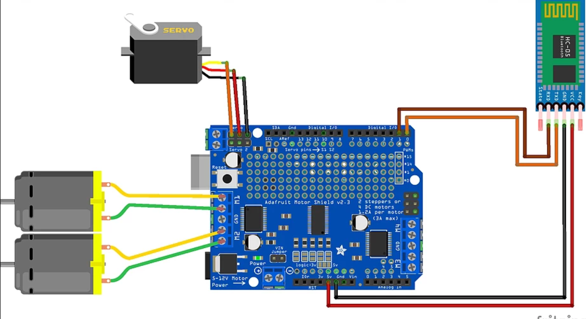

Voice Recognition or Speech Recognition is the ability of a machine to identify words from a spoken language. We see how applications like Siri (iPhone), Google Assistant and Amazon Echo are evolving. In this course, you will learn and build a robot that can be controlled by voice commands. Remember Khul Ja Sim Sim? Looks like Alibaba was an expert in this technology long back!
In this course, you will build a Voice Controlled Robot that can be controlled through voice commands. You will also build an Android App which will understand your voice commands and control the Robot to perform specific tasks via Bluetooth.
By building this project you will learn about:
1.Speech Recognition
2.Basics of Android App Development
3.Bluetooth Communication
4.Arduino Architecture & it's Programming
1.Arduino UNO
2.Motor Shield
3.Ultrasonic Sensor
4.Bluetooth module (HC-05)
5.Servo
6.Jumpers wires
7.Bo Motor 300 rpm
8.wheels
9.soldering iron
10.hot glue gun
11.car kit
